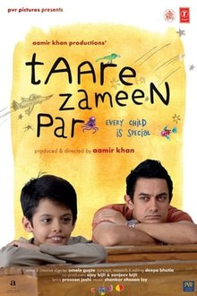

|

|
Her_cocuk_ozeldir
Özet
Her Çocuk Özeldir, problemli bir çocuk ve onun hayatını değiştiren bir öğretmenin hikayesini anlatıyor. 8 yaşındaki Ishaan Awasthi, hiç kimse tarafından taktir edilmeyen bir çocuktur. Okulda dersleri kötüdür, üstelik arkadaşları ile de sık sık kavga eder. Arkadaşları, öğretmenleri ve ailesi tarafından dışlanan Ishaan, ailesi tarafından disipline sokulması için yatılı okula gönderilir. Burada da durum pek farklı değildir. Ta ki resim öğretmeni Ram Shankar ile yanışana kadar. Ishaan’ın çok mutsuz ve yalnız bir çocuk olduğunu fark eden Ram, bunun nedenini araştırmaya başlar. Onun aslında çok özel bir çocuk olduğunu anlayan öğretmen, sabır ve özenle Ishan’ın kendisini bulmasına yardımcı olur.
Film Listesi
|